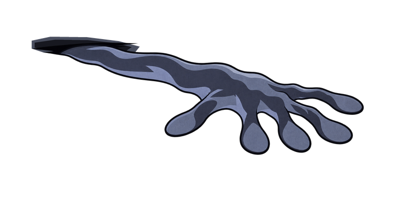

今晚的对手 · 床底的手
第 1 夜 布置猫窝
床边小铺
● 10金币
逗猫棒
本夜的玩具已买好贴着猫放 · 加速
猫窝
面条喜欢身边有玩具♥ 40♥ 出爪加快
先把待放区的面条拖进猫窝
待放区 1
拖进猫窝已全部入窝 · 可拖回暂存
9:16 · 本地网页示意
战斗为演示，尚未接入 Unity
从待放区拖入面条。上方示例不会替你摆放。
贴着猫放 · 加速
先把待放区的面条拖进猫窝
购买后进入待放区，再拖进猫窝。
面条也从待放区出发，所有位置由你来摆。

第 1 夜已完成
阵容跟随左侧摆放，开战后保持相对位置。
商店与格线消失，留下 Boss、猫和攻击反馈。
本示意止于首夜结算；完整流程胜利后进入下一夜。